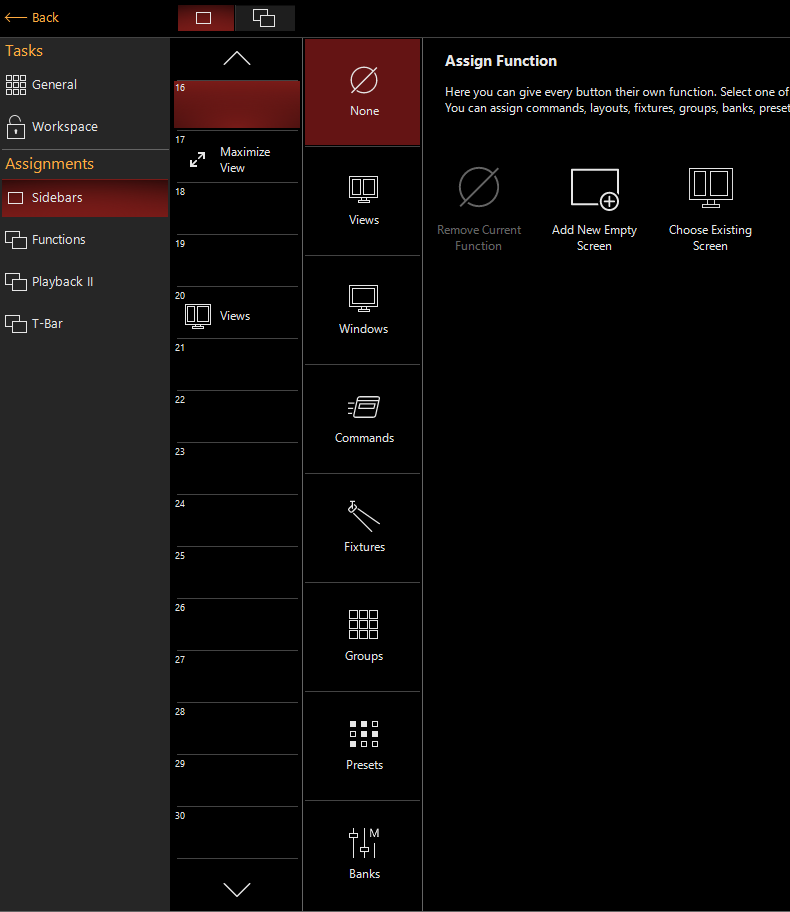
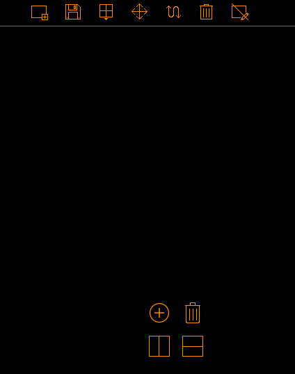
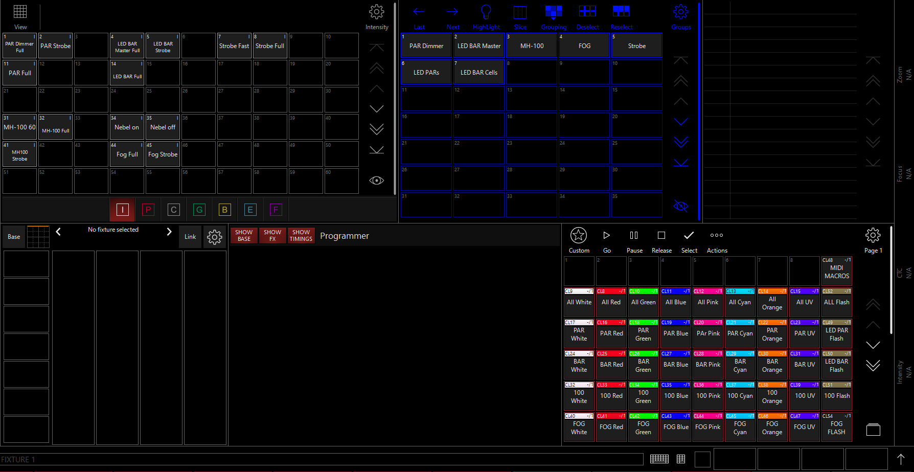

Weg um eigene Views zu erstellen/editieren
>> Monitor Icon >> "Unlock Workspace"
um neuen View zu erstellen, auf freies Feld in der Sidebar drücken, um bestehenden View zu editiern auf den entsprechenden view rechtklick drücken:

>> "None" >> "Add New Empty Screen"

Manche Views haben oben recht ein Zahnrad für Einstellungen, für Größe, Farben etc.
Nachdem View erstelle wurde speichern
>> "Safe View" >> (Name vergeben, Rest auf Internal Right lassen) >> OK
Auch wenn stock Views von Onyx nutzbar sind, eigene Views mit verschiedenen Funktionen die man parallel braucht erhöhen Workflow
Beispiel 
Alle wichtigen Fenster zum erstellen von Cuelisten wurden zu einen View hinzugefügt
Verschieden Views können zu "Ordnern" zusammengefasst werden, diese werden Wokspaces genannt. Onyx kommt standartmäßig mit folgenden: Compose Playback DJ Examples
Um einen bestehenden Workspace zu betreten:
>> "Monitor Icon" >> entsprechenden Workspace anklicken
Um einen neuen Workspace zu erstellen:
>> "Monitor Icon" >> Unlock Workspaces >> Manage Workspaces >> Add
Unter Manage Workspaces können Einstellungen zu bestehenden Workspaces getroffen werden.
Ob man Workspaces benutzen will bleibt jedem selber Überlassen
Function Keys findet man eig nur auf den richtigen Konsolen. Man kann aber auch die F-Tasten benutzen.
Um die Funktion der F-Tasten bzw. der Function Keys einzustellen:
>> "Monitor Icon" >> "Onyx Menu" >> Funtions
Man kann alle möglichen Commands, Views, Gruppen etc zuweisen. Einfach Ausprobieren was und ob man das braucht.
Nach dem Editieren von Views etc. den Workspace wieder locken
>> "Monitor Icon" >> Lock Workspace